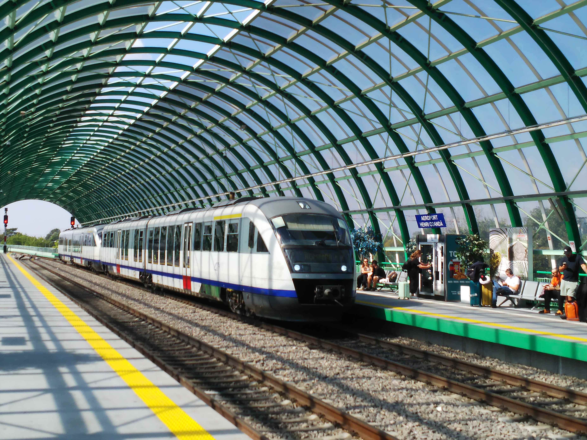
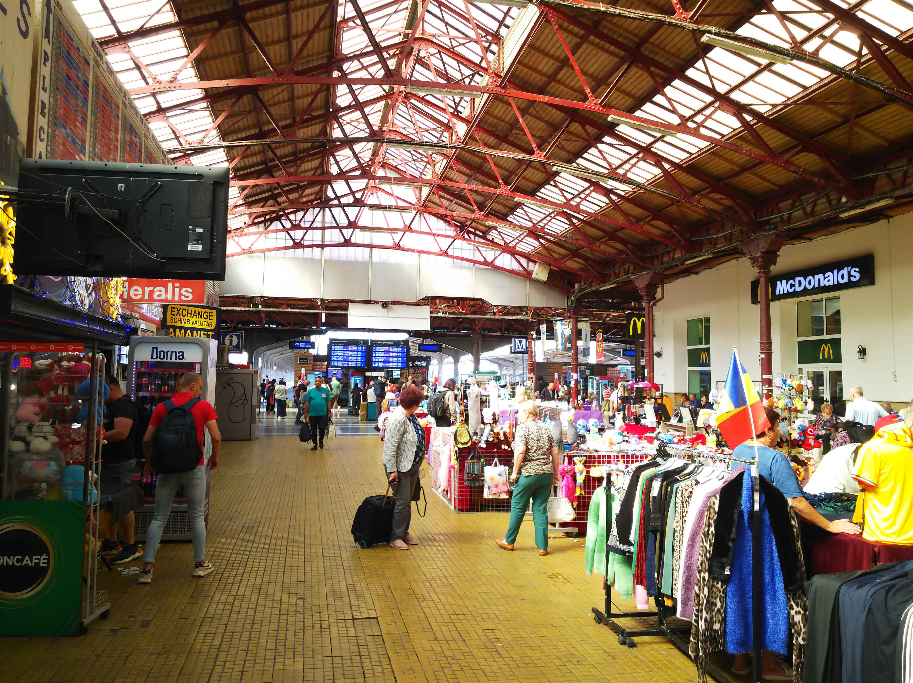
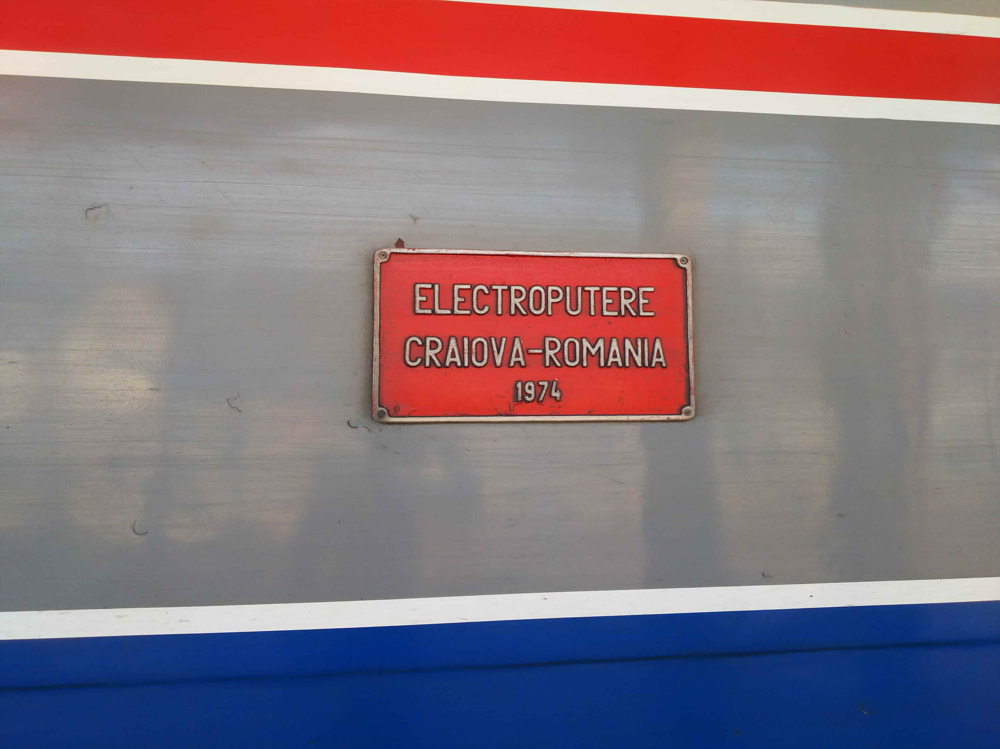
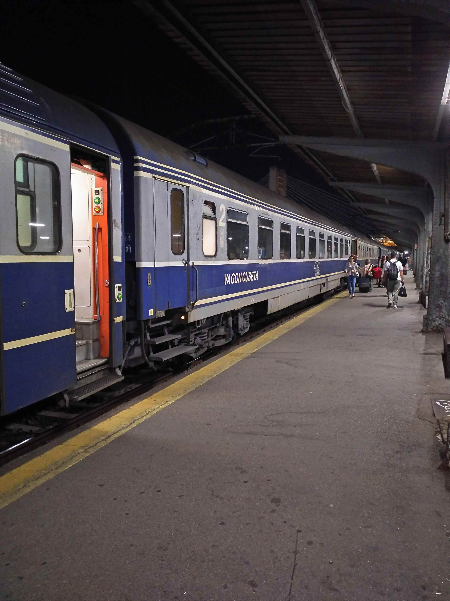
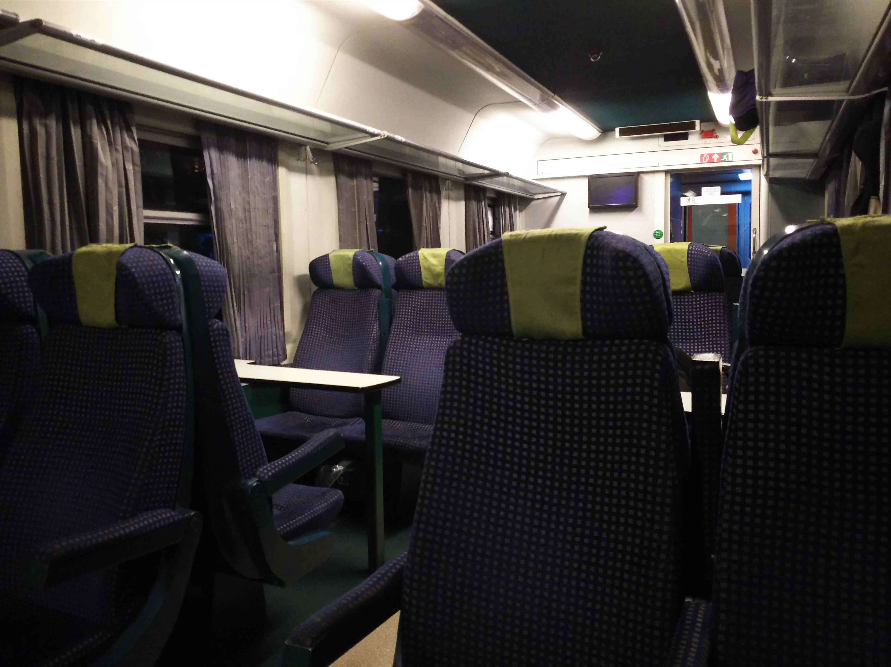

定年までに行きたいところは行っとこと思っている今日この頃、夏休み取れてまへんねんて言い訳のできるこのタイミングで
海外に行ってきました！
関西空港です。相変わらず活気があります。
今回も中国系の航空会社で出発です。去年は東方航
空でしたが、今回は北京が拠点の中国国際航空です。
なんといっても安いのが魅力の中国系の航空会社で
すが、ＬＣＣではないので機内食もちゃんと出るの
が魅力です。
な、なんとうなぎが！ちゃんとした味でした。
（なぜもみじまんじゅうがデザートなのかは謎）
関空発便の機内食は間違いないっすね。
北京で乗り継ぎです。去年、上海では指紋採られま
くってしまいましたが、なぜか首都ではそのような
ことはなかったです。なんでや？
予約サイトの特典で、ラウンジが無料で使えました！
これもラッキーなんですが、期待してたほどのもの
ではなかったです。満員で相席やったし・・・
６時間ほど待ち時間があるので、軽食を期待したの
ですが、激辛っぽいインスタントラーメンしかなく、
パンとお菓子で我慢しました。まぁ飲み物も無料で
飲めるし、よしとしましょう。
※もちろん、キレてないっすよ
ようやく出発。１２時間ぐらいかかります。
横のおばはん（中国人）は機内食をお替わりしてま
した。そんなこと、でけるんや。さすが。
無事、イスタンブールに到着。しかし目的地はさら
に先です。
イスタンブール空港はめちゃめちゃ広く、出国まで
かなり歩かされました。疲れた体にはキツいて。
最後の飛行機はまさかのプロペラ機。たしかに、な
んか時間かかるなと思ってたんすよ。
国際線でっせ・・・
ちなみにルーマニアのフラッグキャリアのタロム航
空です。
で、まさかの隣が日本人。二人しか乗ってないのに、
わざと並ばせたとしか思えへん。
話しかけられたので相手しましたが、若干怪しげな
同年代でした。
どこかわからんから地図がほしいというリクエストにお答えして。
（「わからん人ほっときますよ。いちいち説明しませんよ。義務教育やないんやからね！」（ⓒテント））
無事にルーマニアの首都、ブカレストに到着。
空港の目の前に駅があります。
窓口には人もいて、切符売ってくれました。人がや
ってくれると安心ですわ。
しかしルーマニアの切符もＱＲコード付き。もう世
界の常識なんやな。

わりと最近出来た駅のようで、列車も新しいですね。
ディーゼルカーです。
初めての国の初めての鉄道、興奮しますわ。
途中、クラッシックな機関車が止まってたのとすれ
違ったので早速写真を。
２５分ぐらいでブカレストのメインの駅の北駅に到
着します。
広い車庫や多くの側線が現れて、終着駅の雰囲気が
出てきました。
ブカレスト北駅に到着しました。
ヨーロッパの先進国のような重厚な感じはなく、「
青森に似てる」というのが第一印象。
おるわおるわ、好物の古い車両がどんどんやってきます。
まさにこの北駅が今回の旅のひとつの目的地です。
これ、出発・到着の一覧です。今時、電光掲示でな
いのがいいっすね。
分割していく列車が多いので、どこに行くのか、路
線図が頭にないとわからんような感じでした。

構内の売店エリア。子供向けのおもちゃなんかも売
ってて、いかにも長旅の出発地って感じです。
今日は夜行ですぐにブカレストをあとにするのです
が、さすがに疲れてるので休憩用に駅前のホテルを
予約してます。
北駅、こんな外観です。
首都のメイン駅としては、のどかな感じです。
このあたり、ガイドブックには治安が悪いので気を
付けましょうと書いてますが、全然そんな雰囲気は
ないっすね。
駅の横にトラムの線が走ってました。
晴れてて、陽があたると暑いっす。
近くに中央市場があるというので行って見ることに。
共産時代の集合住宅がたくさん建ってますが、日本
の集合住宅っぽい雰囲気です。
肝心の中央市場はなくなってました！
古めの建物も残ってます。

駅に戻ってくると、共産圏で見る古いトラムも走っ
てるのを発見！

駅構内を歩いてると、切符を売る窓口を発見。ここ
もちゃんと人が対応してます。
今日の夜行の切符は？と聞かれそうですが、それに
ついては出発前にネットですでにゲットしてるんで
すわ。
２０年以上前に中国旅行した時は、旅行会社に切符
の手配頼んで、現地で直接受け取ったりしたけどな
ぁ。
またホームに戻って、しばし撮影タイム。
この車両はフランスの中古車とのことです。
これ、わかりにくいですが、係の人が手に、表が緑、
裏が赤の札を持ってて、出発ＯＫになったら、運転
手にそれをかざしてました。
出発時間が同じ列車があって、どないするんやろと
見てたら、そんな仕組みでした。

出来てから５０年以上たってるやん。
もちろん、新しい車両も走ってます。そのうち多数
派の客車列車も置き換わってしまうのかと思うと寂
しい限りですわ。
ちなみにルーマニアは喫煙天国で、この駅も男女と
も吸いまくってました。
そーゆー面でも、ひと昔前に戻った感覚です。
宿を引き払って、いよいよ夜行に乗りに北駅に向か
います。
運よく、共産時代のトラムがやって来ました。
夜も客車列車が次々やってきますね。

お目当ての列車が入線してきました。この車両みたいです。窓に紙に書かれた号車と行先で確認できました。
まぁまぁ新し目の機関車がけん引するみたいです。 １４両編成でした

２等です。
出発した時は１ＢＯＸ独占出来ましたが、そのうち
乗ってくるかと思ってたのに最後まで独占出来まし
た。
平日やし、そんなもんか。まぁラッキーでした。
学生時代のように、縮こまりながら寝ましたが、さ
すがヨーロッパの車両なので室内が広く、この歳で
もよく寝れました。
夜中、分割や併合が何回かあって、進行方向も２回
ぐらい変わりました。
朝、いかにも田舎な感じの風景が広がっていました。
とにかく教会が多いです。ひとつの集落に複数ある
場合もありました。
駅は少ないですが、ちゃんと有人です。
けったいなモーターカーみたいなのもいました。
終着のSighetu Marmaţiei に到着です。まさかのほぼ定時到着で、あわてて荷物まとめました。
最後は５両ぐらいの編成でした。
線路はまだ先に続いてそうです。
特急的な列車の終着駅なんですが、全然人はいなか
ったです。
たとえるなら昔の大社駅とか男鹿駅のような感じで
す。
駅舎の外観です。
店も駅前に数件あるだけでした。街の中心からは離
れてます。
さて、ここからは、まずは観光です。
近く、といっても２０ｋｍぐらい離れてますが、そ
こには世界遺産にも登録されている教会群があるそ
うです。
事前にバスの時間とか調べたんですが、一日に数本
しかなくて全然時間があいません。
時間的に、タクシーで行くしかないので駅前でタク
シー探しましたが、車だけあって運転手が行方不明！
しばらく街のほうに歩きながらタクシーを探してい
ると運よく空車に遭遇しました。超ラッキーです。
運ちゃんになんとか行先の希望を伝えて不安な気持
ちで身を任せてたら、無事目的地のBârsanaに到着。
こういった木造の教会がルーマニアのこのエリアの
特徴的な建物です。
ここは、観光目的で、そういった建物を移築してい
るところみたいです。
内部は全面に絵が描かれています。
Barsanaの街の中心にある教会。これが世界遺産に
指定されてるってことなんですが・・・
近くで見ると、そんなふうには見えへんけどなぁ。
その２へ続く！